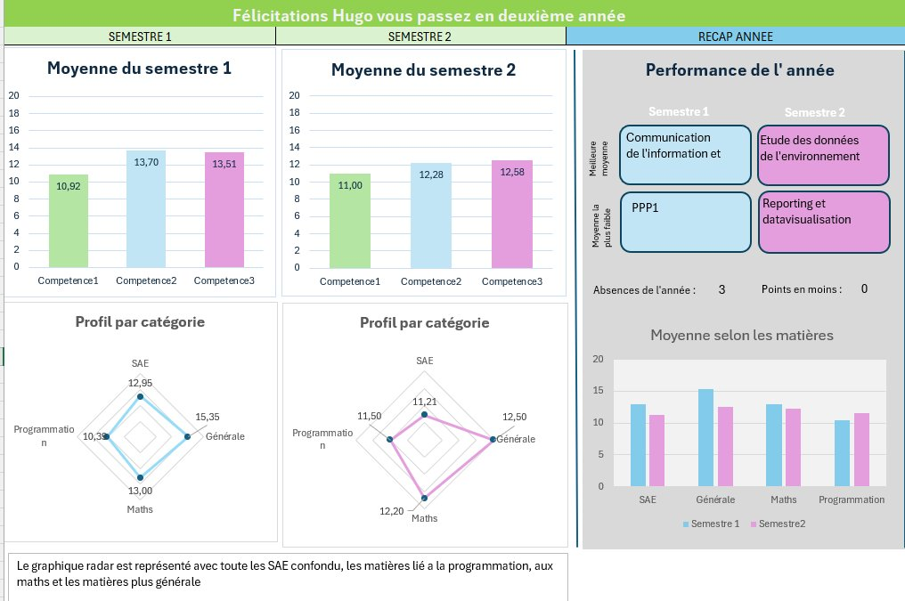

Décembre

Description
Ce projet avait pour objectif de développer un outil Excel personnel de gestion des notes en BUT SD. Il permet l'ajout et la modification de notes, l'affichage de tableaux de bord interactifs avec graphiques, et fournit un verdict automatique (admission en 2e année, compétences validées) selon des règles précises. Un guide d'utilisation accompagne l'outil.
Compétences acquises
Outils & Technologies
Ce que j'ai appris
Nous avions mal compris les règles de passage à l'année suivante, ce qui nous a amenés à implémenter une logique incorrecte dans l'outil. Cela m'a appris qu'il est essentiel de bien lire et comprendre un sujet dans son intégralité avant de commencer à coder, au risque de devoir tout reprendre depuis le début.